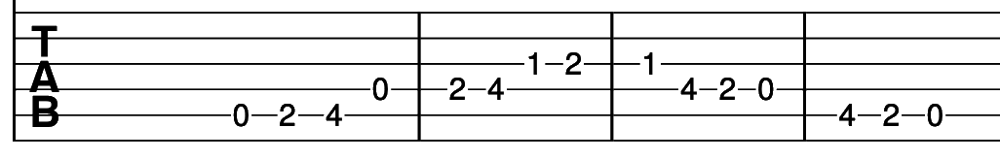

It's always important to pause and review old material before moving onto anything new. Try playing the
five chords we have already looked at in order to play through them more fluidly. Try moving between C and G
and from G to C. These chords are often used in conjunction in songs but are slightly more awkward to hold as
a beginner. Once you feel more comfortable changing between chords, try to play the A major scale again. Try
to keep the lengths of the notes even and keep going until the scale sounds fluid. Here is a list of the songs
we have already covered. Click on them and play through the songs one by one.
Snow Patrol - Chasing Cars
The Beatles - Twist and Shout
Lynyrd Skynyrd - Sweet Home Alabama

How can I stop the fingers of my left hand feeling so sore? This is pretty
common to feel pain when taking up a new instrument. This pain is more pronounced using steel strings as
opposed to nylon strings. Try to practise regularly but not for too long at any one time. If it causes you
less pain to practise for 10 minutes three times a week than for 30 minutes once a week then you will get a
greater benefit from the three smaller increments of practise in the week. Another reason not to practise to
the point of pain is that you will feel resentful and will be less likely to continue playing in the long run.
Should I use my fingers or a plectrum to play? It's a matter of personal
preference. Strumming with your fingers typically creates a softer sound than using a pic. You may prefer a
softer sound for classical styles and the notes to ring out more for rock songs. I usually strike strings
with my thumb when I play.
What is a capo? A capo can be used to change the pitch of your strings without
retuning your guitar. This is useful when accompanying a singer with a different vocal range than specified
in your sheet music. It may also be useful when you find chords for a song you like but cannot play some
chords in the song. A capo allows you to transpose the chords, changing the key allowing you to play C and
G rather than the trickier B and F# chords for example.
How can I train my ear? Make sure to tune your guitar each time before you
play. You can buy a tuner in most music shops or download a free app on your phone. Keeping your guitar in
tune will help you learn what each string should sound like. This is useful when one of your strings is out
of tune as you know straight away. It also helps when you don't have a tuner to hand. You can listen to
simple melodies and try playing them back to hear how close you are. Try to figure out simple childhood
rhymes without sheet music to train your ear. This forces you to hear how far apart the notes are.
After playing through the previous songs, chords and scale have a go at this song. Try playing it and see if
you recognise it. Click the sheet music to reveal the name of the song.